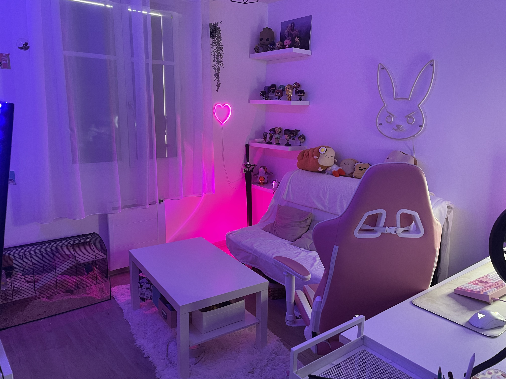
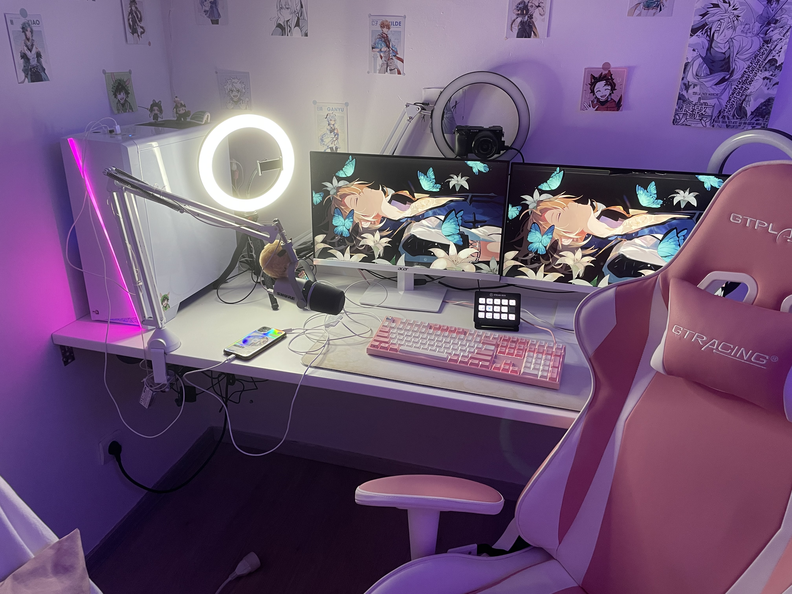
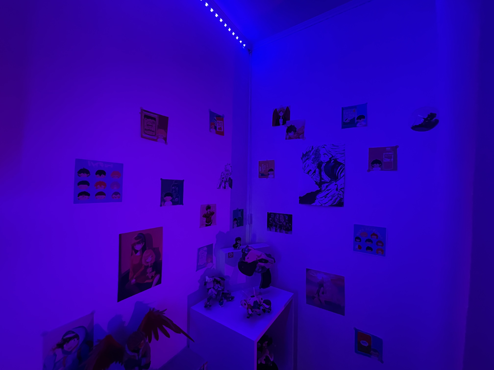
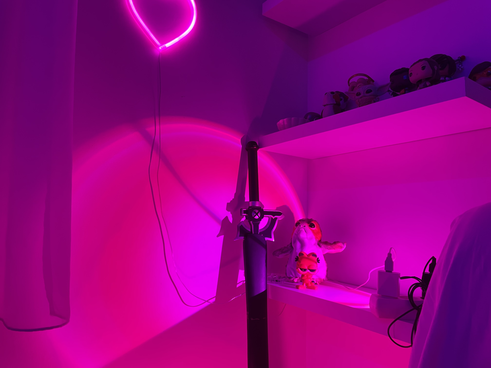

Une personne, plusieurs inspirations
Par Balakumar DJEASSITTARAME
Publié le 24 novembre 2022 à 17h32 Mis à jour le 25 novembre 2022 à 22h19
Temps de lecture: 1 min
Léana à plusieurs sources d’inspiration dans sa vie. Des objets, des fictions, des personnages malgré qu’ils ne sont pas réel, ont eu un énorme impact dans sa vie et c’est grâce à ça que Léana est devenu Raion.
Photo de la chambre de Léana
Pour elle, si ce monde est devenu une source d’inspiration, c’est parce qu’elle a vécu avec tout ça depuis de nombreuses années.
Son poste de travail, l'endroit où elle exerce son métier.
Raion n’a jamais caché son amour pour ses inspirations auprès de son public, des streamers/streameuses auraient peur de se faire juger car cela peut paraître enfantin d’après certain. Au contraire, elle assume totalement cela et en fait de sa force. On peut tout de suite le voir avec la décoration de sa chambre. On peut retrouver plusieurs mondes différents dans son décors comme par exemple le monde des manga/anime. On peut retrouver énormément de dessins ou encore de figurines manga qui eux même représente quel genre d'œuvre elle aime (My Hero Academia, Sword Art Online, Death Note).
Des dessins et des figurines qui représente énormément d'années
On peut encore voir des éléments cosmétiques venus tout droit du japon comme des bouteilles de soda ou encore des figurines qu’on ne trouve que là-bas. Léana à déjà fait part de son amour pour les pays Est-Asiatique d’où la présence de tous ces éléments. Comme ses lives le montrent, elle adore énormément les jeux-vidéo, et évidemment, on peut voir des éléments qui viennent du monde des jeux-vidéos auxquels elle joue.
Des dessins et des figurines qui représente énormément d'années
La mascotte Bready